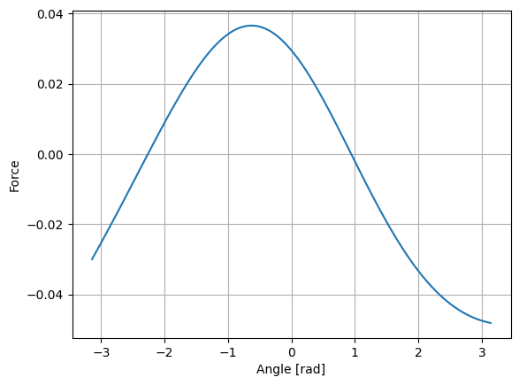
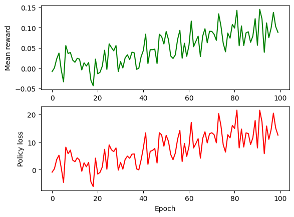
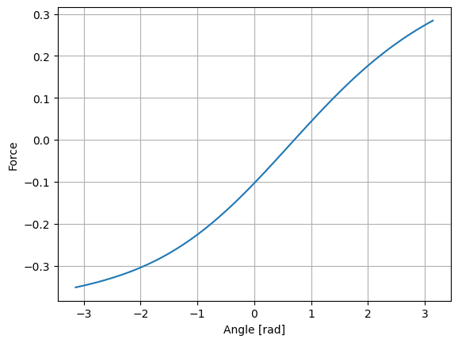
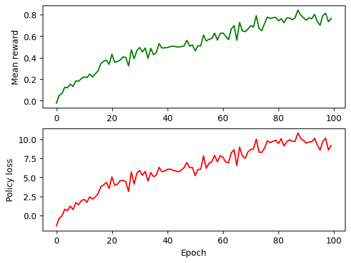
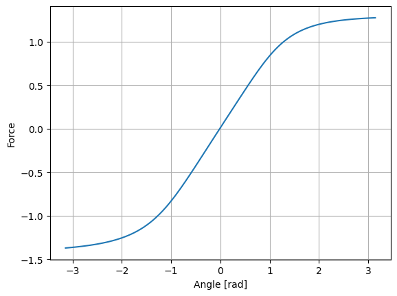
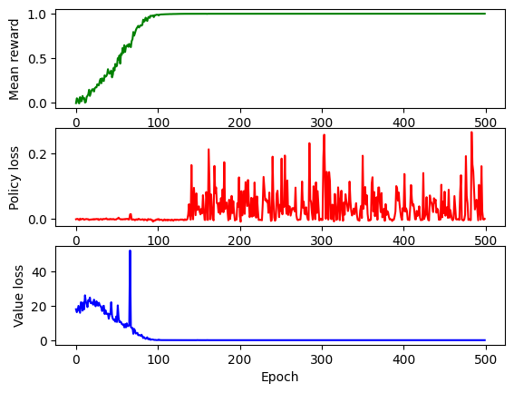

Task 1) Simple Policy Gradient
I modeled the system as a Markov Decision Process (MDP) with a stochastic policy $\pi_\theta(a_t | s_t)$ parameterized by a neural network. I implemented the REINFORCE algorithm, approximating the gradient via the log-product rule:
The results indicated that the policy learned a control law resembling a PD controller. However, the training process exhibited high variance and instability.

Fig 1: Action vs Angle

Fig 2: Training Reward
Video 1: Simple PG Demo
Task 2) Discounted Policy Gradient
The simple trajectory return $R(\tau_i)$ does not account for the temporal influence of actions, leading to high variance in gradient estimation. To address this, I introduced a discount factor $\gamma \in (0,1)$ to reduce the weighting of distant future rewards.
The implemented gradient estimate with discounted returns is:
This formulation reduced variance significantly, though it introduces bias into the gradient estimate.

Fig 3: Action vs Angle

Fig 4: Training Reward
Video 2: Discounted PG Agent
Task 3) Advantage Estimation
To further reduce variance and improve stability, I replaced discounted returns with an Advantage function estimate.
I implemented a value network $\hat{V}_\theta$ to approximate $V^{\pi}(s)$, trained via regression on value targets $V^*(s)$ minimizing the L2 distance:
The resulting policy gradient estimate using the computed advantages is:

Fig 5: Action vs Angle

Fig 6: Training Reward
Video 3: Advantage Actor-Critic Agent
Task 4) Proximal Policy Optimization (PPO)
To mitigate catastrophic forgetting and training instability inherent in standard policy gradients, I implemented PPO. This method constrains policy updates using a clipped surrogate objective.
Defining the probability ratio $r_\theta(a_t | s_t) = \frac{\pi_\theta(a_t | s_t)}{\pi_{\theta_{old}}(a_t | s_t)}$, the objective is:
This objective prevents the new policy from diverging excessively from the old policy, ensuring monotonic improvement. The clipping ratio was set to $\epsilon = 0.2$.

Fig 7: Action vs Angle

Fig 8: Training Reward
Video 4: PPO Agent